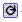
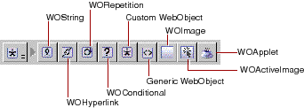
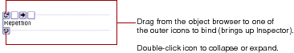

Collapsing can be desirable when you have dynamic elements that contain other elements and take up a lot of space on the screen. You can double-click again to expand the element. In addition, you can use the menu commands Elements
 Table of Contents
Table of Contents  Previous Section
Previous Section

You use this toolbar to create all dynamic elements other than form-based elements. This section provides some general information about using these elements. Each element is described in more detail in its own section.
To create a dynamic element, you click its toolbar icon. One thing to be aware of is what happens when there are already elements selected when you create the element:

To bind a dynamic element, you drag from an item in the object browser to one of the outer icons. The Inspector appears, allowing you to complete the binding. See "Binding Elements" for more information.
You can double-click one of the icons to collapse the element into a single icon:
 WebObjects
WebObjects  Expand All or Elements
Expand All or Elements  WebObjects
WebObjects  Collapse All to expand or collapse all the dynamic elements in the window.
Collapse All to expand or collapse all the dynamic elements in the window.
Table of Contents  Next Section
Next Section